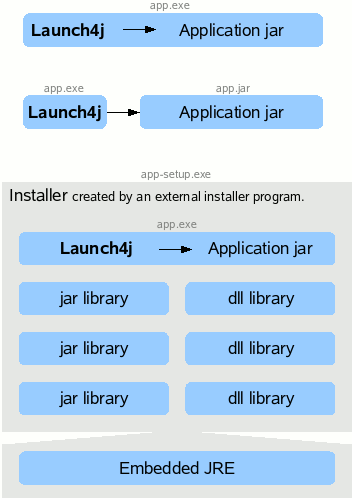

Cross-platform Java executable wrapper
Launch4j is a cross-platform tool for wrapping Java applications distributed as jars in lightweight Windows native executables. The executable can be configured to search for a certain JRE version or use a bundled one, and it's possible to set runtime options, like the initial/max heap size. The wrapper also provides better user experience through an application icon, a native pre-JRE splash screen, and a Java download page in case the appropriate JRE cannot be found.
Features
- Launch4j wraps jars in Windows native executables and allows to run them like a regular Windows program. It's possible to wrap applications on Windows, Linux and Mac OS X!
- Also creates launchers for jars and class files without wrapping.
- Supports executable jars and dynamic classpath resolution using environment variables and wildcards.
- Doesn't extract the jar from the executable.
- Custom application icon with multiple resolutions and color depths.
- Native pre-JRE splash screen in BMP format shown until the Java application starts.
- Initial priority and single application instance features.
- Works with a bundled JRE or searches for newest Sun or IBM JRE / JDK in given version range and type (64-bit or 32-bit).
- Opens Java download page if an appropriate Java version cannot be found or a support website in case of an error.
- Supports GUI and console apps.
- Supports Windows application manifests.
- Passes command line arguments, also supports constant arguments.
- Allows to set the initial/max heap size also dynamically in percent of free memory.
- JVM options: set system properties, tweak the garbage collection...
- Runtime JVM options from an .l4j.ini file.
- Runtime command line switches to change the compiled options.
- Access to environment variables, the registry and executable file path through system properties.
- Set environment variables.
- Option to change current directory to the executable location.
- The JRE's bin directory is appended to the Path environment variable.
- Ability to restart the application based on exit code.
- Custom version information shown by Windows Explorer.
- Digital signing of the executable with sign4j.
- Supports Windows Security Features of the Windows 8 certification kit.
- GUI and command line interface.
- Build integration through an Ant task and a Maven Plugin.
- Lightweight: 35 KB!
- It's free and may be used for commercial purposes.
- Includes a sample application and Ant script that automates the build process from Java sources to native executable.
- The wrapped program works on all Windows platforms, Launch4j works on Windows, Linux and Mac OS X.
License
This program is free software licensed under the BSD 3-Clause License, the head subproject (the code which is attached to the wrapped jars) is licensed under the MIT License. Launch4j may be used for wrapping closed source, commercial applications.
Info
Running Launch4j on other Java enabled platforms is a matter of getting a binary version of MinGW binutils 2.22 (windres and ld only) for your system or compiling them. If you'll provide these, I'll be able to create a binary package available for download.